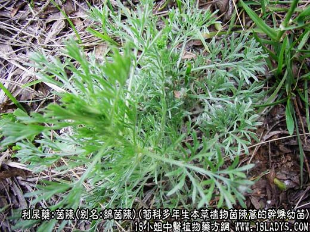
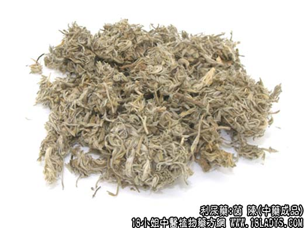
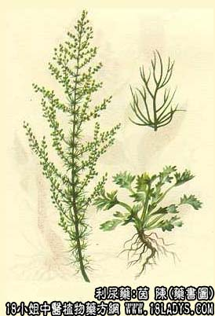

茵陈为较常用中药，《神农本草经》列为上品。它的主要功效有解热、利胆、抗菌、抗病毒、抗真菌还能降脂，许多人不知道茵陈长什么样，下面中药师宁宁为大家分享茵陈图片以及茵陈的功效与作用。

茵陈源植物图片

茵陈图片 药材

别名：绵茵陈、茵陈蒿。
来源：为菊科多年生本草植物茵陈蒿的干燥幼苗。野生。
产地：主产于山西、陕西、河北等省。其它各地亦有生产。
性状鉴别：茵陈为带有部分短根的幼嫩的干燥权草，多皱缩卷曲成团状。根木质化，坚硬，表面棕褐色，内黄白色。丛生多数苗茎和叶柄，细如线。长约3～10厘米。叶为二回羽状深裂，裂片线形，先端三尖形。茎叶表面均密披灰白色毛茸。绵软如绒。气微清香，味微苦。
以棵小，质嫩，密披灰白色毛茸，绵软如绒，气清香者为佳。
主要成分：含挥发油，油中含茵陈烯、茵陈酮、茵陈素、另含叶酸、绿原酸、咖啡酸。
1、解热。茵陈浸剂有强力的解热作用，但煎剂解热的作用则较弱。
2、利胆。能促进胆汁的分泌，有效成分为绿原酸及咖啡酸等。
3、抗菌。体外试验对金黄色葡萄球菌有抑菌作用。
4、抗病毒。对流感病毒(PR8株)有强力的抑制作用。
5、抗真菌。稀释400万倍，仍能抑制猩红色毛癣菌发育，有效成分为茵陈素。
6、降脂。能降低血清胆固醇和载脂蛋白B，防止血管壁脂质堆积。
炮制：去根、切咀、生用。
性味：苦、味寒。
归经：入脾、胃、肝、胆经。
功能：清湿热，退黄疸。
主治：黄疸、小便短赤、湿疮。
临床应用：为治疗黄疸的主要药物。
1、治湿热黄疸，用于阳黄（黄色鲜明如橘子色，多见于急性黄疸型传染性肝炎、胆囊炎等），取其有促进胆汁分泌和排泄的作用。黄疸初期时，热重于湿，有发热、小便不利、大便秘结、腹微胀满、脉弦数者，则配栀子、大黄以加强清热泻火作用，放入茵陈蒿汤。如果湿重于热，有胸脘满闷，头重身困，大便并不秘结，而小便不利的证候较显著，脉濡缓，则须配五苓散，方如茵陈五苓散。
2、治寒湿黄疸，用于阴黄（黄色暗晦如烟熏，多见于慢性黄疸型传染性肝炎、肝硬变等病），有全身虚寒而夹湿的证候，此时须配温里祛寒药如附子、干姜等，以温化寒湿，方如茵陈四逆散。
3、作为柴胡的代用品用作清热。茵陈和柴胡都有解热作用，中医经验认为两药都入肝胆，能去肝胆实火。但茵陈的药性较柴胡稍柔和，故凡平素阴虚而新有实热，须用柴胡清热，但又不能受柴胡之刚燥者，可用茵陈代柴胡。
使用注意：虚黄是黄而带淡白色，小便如常，口淡，脉弱，是由贫血，寄生虫病所致，不是由湿热引起，因此不宜用茵陈，宜用补中益气药物治疗。
用量：15～30g。
处方举例：
1、茵陈蒿汤(《金匮要略》)：绵茵陈30g，大黄9g，栀子12g，水煎服。
2、茵陈五苓散(《金匮要略》)：绵茵陈30g，云苓15g，猪苓12g，白术12g，泽泻9g，桂枝6g，水煎服。
3、茵陈四逆汤(《张氏医通》)：绵茵陈18g，熟附子9g，干姜9g，炙甘草3g，水煎服。
注：茵陈蒿各地使用习惯不同，原植物种属不一，京津两地习用上述茵陈蒿。此外据（中药志）记载有以下同科类似品和地区习用品。
了解更多的利尿逐水的中药，为您推荐↓↓↓↓